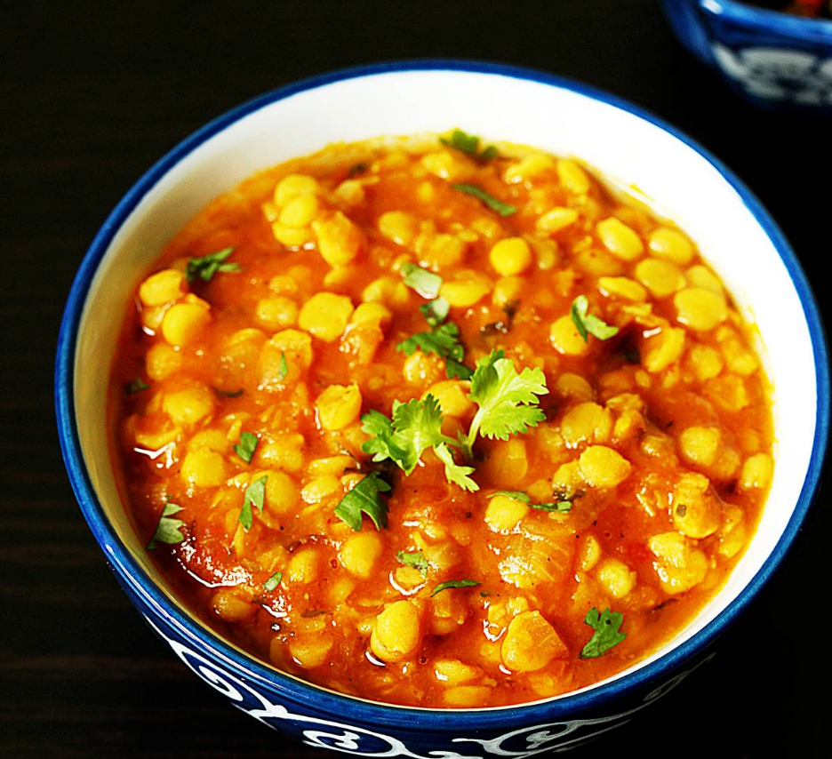

Chana Dal

Description
Chana Dal served with rice is a healthy, hearty and satisfying meal that you will love any time. It is naturally vegan and gluten-free!! This recipe makes a delicious, spicy and protien-packed Chana Dal dish that will soon be your family favorite. Indians eat lentils almost daily in some or the other form. This Chana Dal recipe is yet another way of enjoying lentils with minimum effort.
Ingredients
- 100 gm chana dal (yellow bengal gram dal)
- 1 glass of water
- 2 tablespoon Oil
- 1 onion and 5 green chilis
- 2 tomatoes for more taste and gravy
- ¼ teaspoon Garam masala powder
- 1½ teaspoon ginger garlic paste
- 1 teaspoon turmeric powder
- 1½ teaspoon salt
- 1 teaspoon red chili powder
- 1 teaspoon coriander powder
Steps
- Soak chana dal in water for 5 hours before cooking
- Turn ON the stove and keep curry bowl on top
- Add Cooking Oil and wait until it heat up
- Add Onion and green chili pieces in Oil and mix until little fry
- Add ginger garlic paste and mix it (low flame)
- Add Garam masala and then immedietly add tomato pieces and mix them well (medium flame)
- Leave for 5 min with lid closed
- Add turmeric powder and salt and mix it, leave for 5 min more
- Add water and wait for 10 to 15 min before going into next step
- Next add red chili powder and coriander powder, mix them well and wait 3 min
- Now turn OFF the stove and thats it! Masala Chana Dal Curry is ready!!